MASTER'S RESEARCH · VINS-FUSION · FAILURE MANAGEMENT
암전에서 무너지는 VIO를 감지하고
위치 출력을 이어가다
영상 특징점이 사라지는 순간을 감지하고 외부 위치 입력으로 전환하는 상태 관리 프레임워크를 설계했습니다. Gazebo 시뮬레이션과 OptiTrack 기반 RC카 실험으로 성능을 검증했습니다.
- 연구 형태
- 석사학위 연구 전 과정 수행
- 핵심 구현
- P-PID 위치 제어·실패 대응
- 검증 환경
- Gazebo, OptiTrack 기반 RC카
- 발표
- 2025 한국로봇종합학술대회
FEATURE TRACKING TEST
RESEARCH ARCHITECTURE
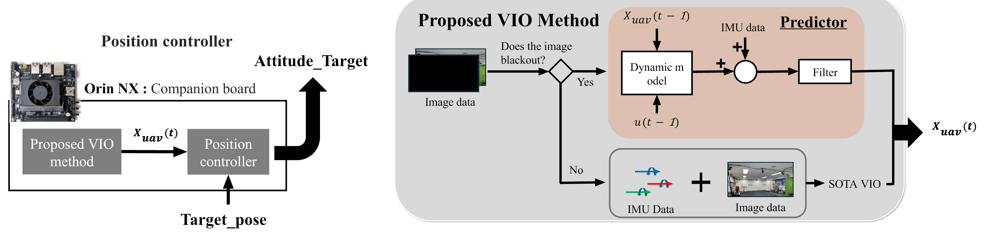
연구 질문
카메라 영상이 잠시 끊기더라도 플랫폼이 사용할 위치 정보는 계속 이어질 수 있을까?
VINS-Fusion은 영상과 IMU를 함께 사용하지만, 암전이 길어지면 추적 특징점이 급감하고 IMU 오차가 누적되어 위치가 크게 틀어졌습니다. 단순히 알고리즘의 파라미터를 조정하는 대신, 위치추정기가 실패할 수 있다는 전제에서 실패를 판단하고 입력을 전환하는 별도 관리 구조를 연구했습니다.
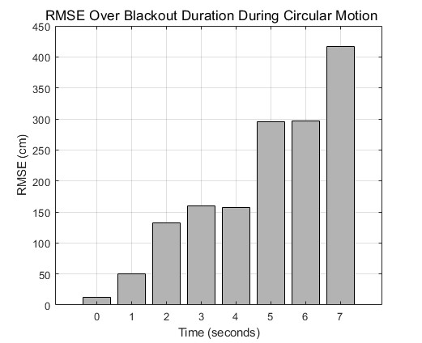
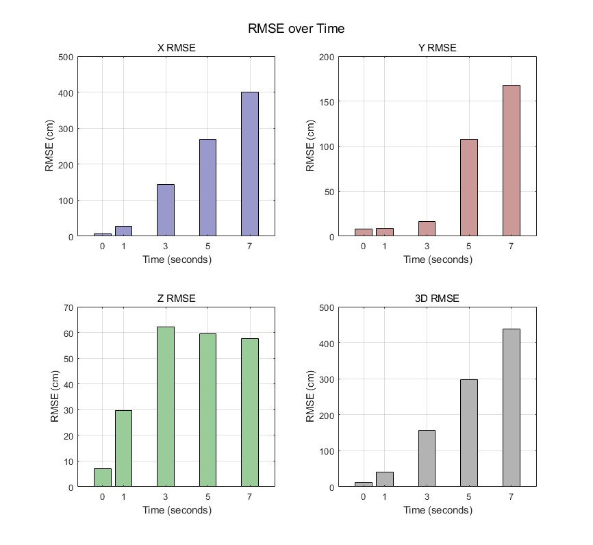
기반 환경 구축
연구 결과만 비교하기 전에 카메라, VIO, 비행 제어기가 같은 좌표와 시간 기준으로 데이터를 주고받는 환경부터 구성했습니다.
- 01VINS-Fusion 포팅
Ceres Solver 버전 차이로 발생한 빌드 오류를 추적하고 WSL 환경의 CMake 설정을 수정했습니다.
- 02스테레오 카메라 보정
Ubuntu 14.04 기반 Kalibr Docker 이미지를 활용해 내부 파라미터와 카메라 간 상대 변환을 추정하고 재투영 오차를 확인했습니다.
- 03드론 시뮬레이션 구성
Gazebo, ArduPilot, MAVROS를 연동하고 드론 모델과 카메라 센서, 위치 제어 흐름을 구성했습니다.
- 04AirSim 사전 검토
AirSim과 ROS 연동 환경도 구성해 제어·센서 설정을 시험했습니다. 최종 논문에는 포함하지 않았지만 시뮬레이션 환경을 비교하고 연구 방향을 정하는 과정에 활용했습니다.
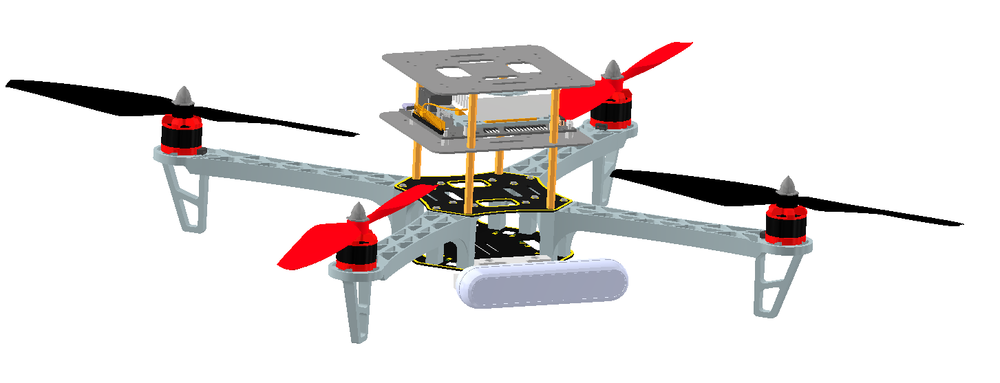
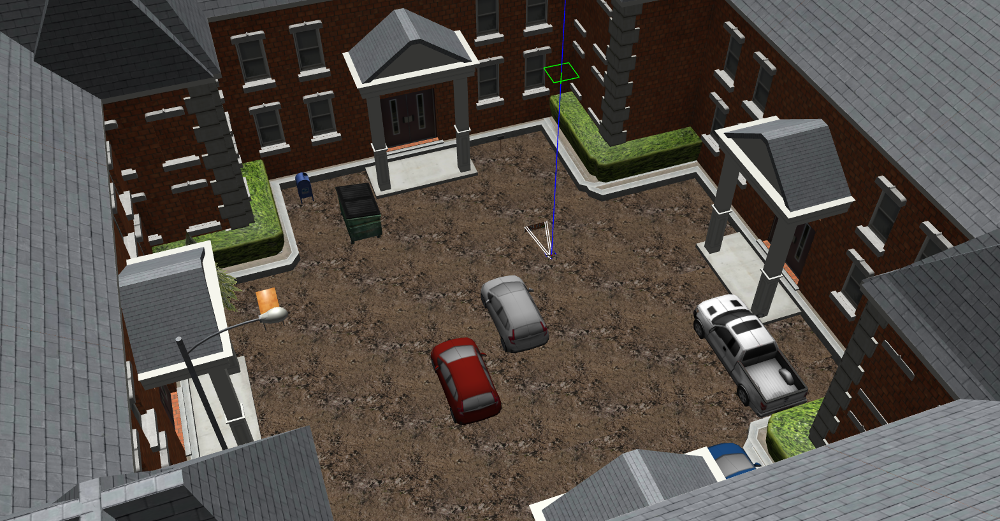
P-PID 위치 제어기
VIO가 추정한 위치를 실제 드론의 이동으로 연결하기 위해 MAVROS 기반 캐스케이드 위치 제어기를 직접 구현했습니다.
외부 루프의 P 제어기가 위치 오차를 목표 속도로 바꾸고, 내부 루프의 PID 제어기가 속도 오차로 가속도 명령을 계산하도록 구성했습니다. 계산 결과는 드론의 Roll, Pitch, Thrust 명령으로 변환해 ArduPilot에 전달했습니다.
1위치 오차목표 위치와 추정 위치 비교
2외부 P 루프목표 속도 생성·크기 제한
3내부 PID 루프속도 오차에서 가속도 계산
4자세 명령Roll, Pitch, Thrust 출력
제어 주기를 50 Hz로 맞추고 목표 속도, 자세각과 추력 범위를 제한했습니다. Dynamic Reconfigure로 게인을 조정하면서 ArduPilot 기본 위치 제어와 직접 구현한 P-PID의 축별 추종 응답을 같은 경로에서 비교했습니다.
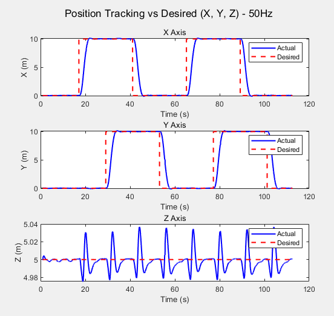
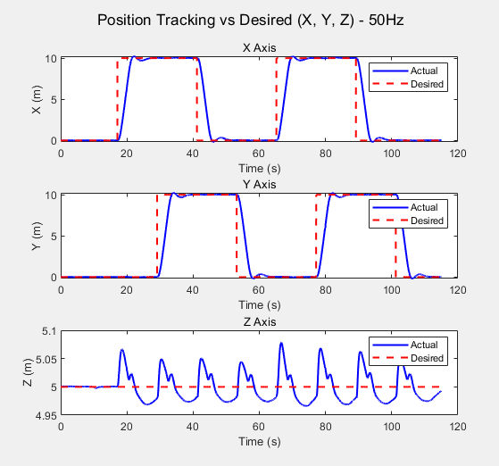
실패 감지와 대응
카메라를 완전히 가려도 미세한 빛 때문에 특징점이 약 10개 남아, 특징점 수가 0이 되는 조건으로는 실패 시점을 잡을 수 없었습니다. 저조도 실험을 반복하며 추정이 무너지기 직전의 특징점 수를 관찰하고 감지 임계값을 정했습니다.
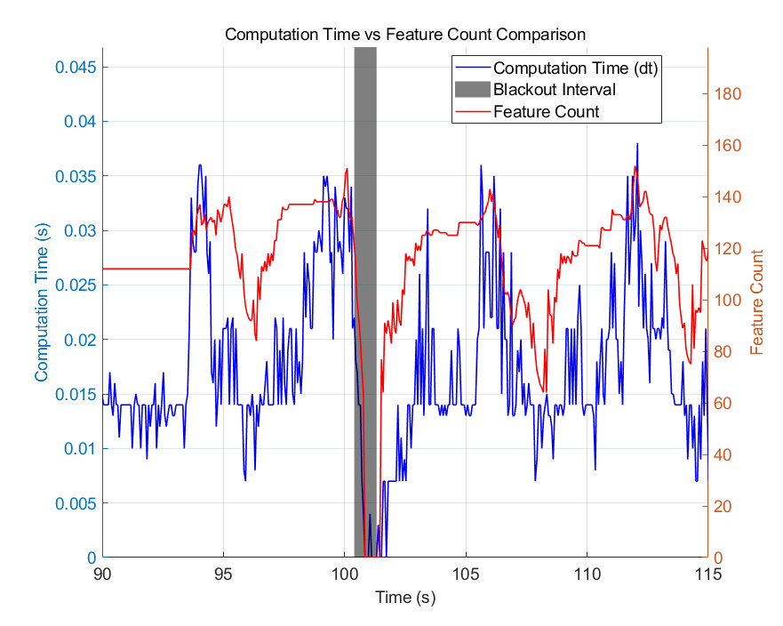
1특징점 추적실시간 개수 모니터링
2실패 판단임계값 이하 신호 발생
3입력 전환외부 위치 정보 사용
4복구·정렬연속된 위치 출력 확보
초기에는 VINS-Fusion 최적화 내부를 직접 수정하려 했지만 구현 난도가 높았습니다. 최종적으로 기존 추정기를 크게 훼손하지 않고 외부 상태 관리자를 분리하는 구조로 방향을 전환해 이식성과 검증 가능성을 높였습니다.
드론 시뮬레이션
WSL의 Gazebo 환경에서 사각 경로를 비행시키며 0초부터 7초까지 암전 시간을 바꿔 적용 전후 궤적을 비교했습니다.
0.8613 m대응 구조 적용 전 위치 오차
0.3024 m대응 구조 적용 후 위치 오차
64.9%드론 시뮬레이션 오차 감소
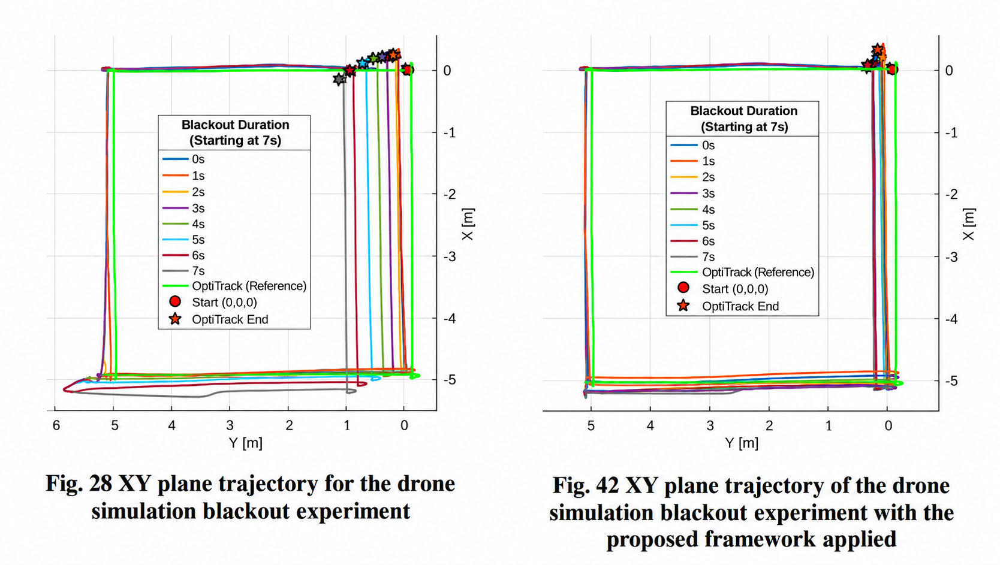
실물 검증
시뮬레이션에서 확인한 구조를 RC카 시험 환경으로 옮겼습니다. Jetson 기반 연산부와 스테레오 카메라를 탑재하고, OptiTrack의 120 Hz 위치 정보를 기준 궤적과 대체 입력으로 사용했습니다. 본 실험은 개념 검증 단계로 외부 추정치에 참값을 사용했습니다. 별도로 드론 실내비행에서도 데이터 흐름과 동작을 확인했지만, 해당 결과는 논문의 정량 평가에는 포함하지 않았습니다.
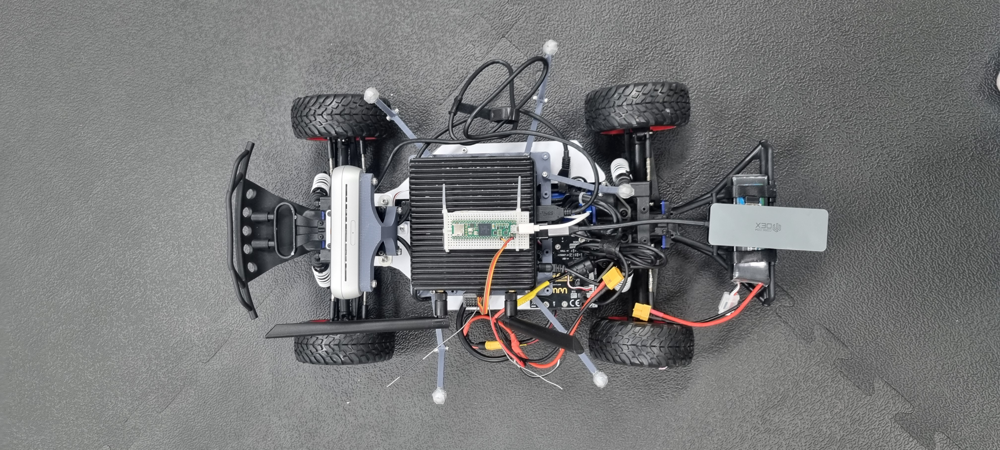
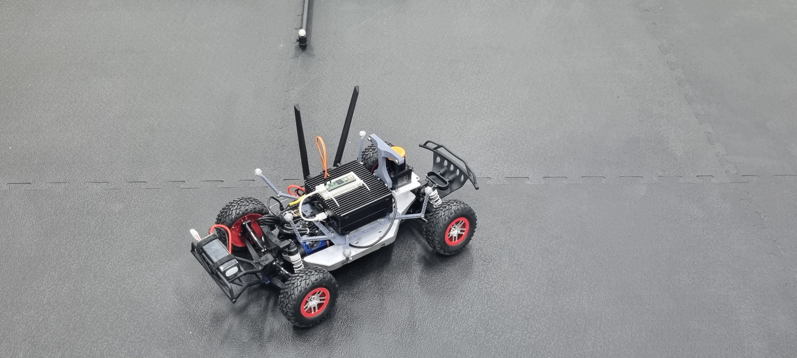
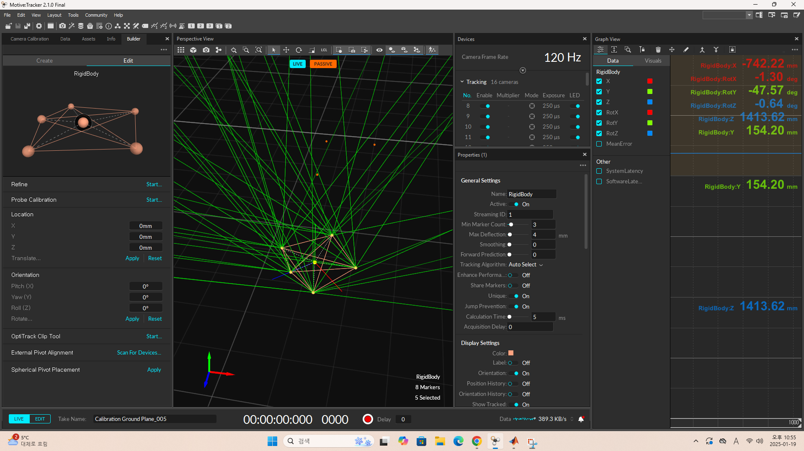
0.9121 m대응 구조 적용 전 ATE RMSE
0.1346 m대응 구조 적용 후 ATE RMSE
85.2%동일 조건에서 감소한 오차
RC카 7초 암전 실험 결과
동일한 회전 경로와 7초 암전 조건에서 VIO 궤적과 OptiTrack 기준 궤적을 비교했습니다.
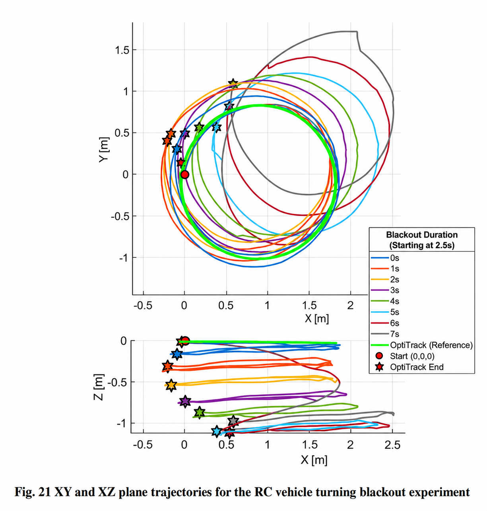
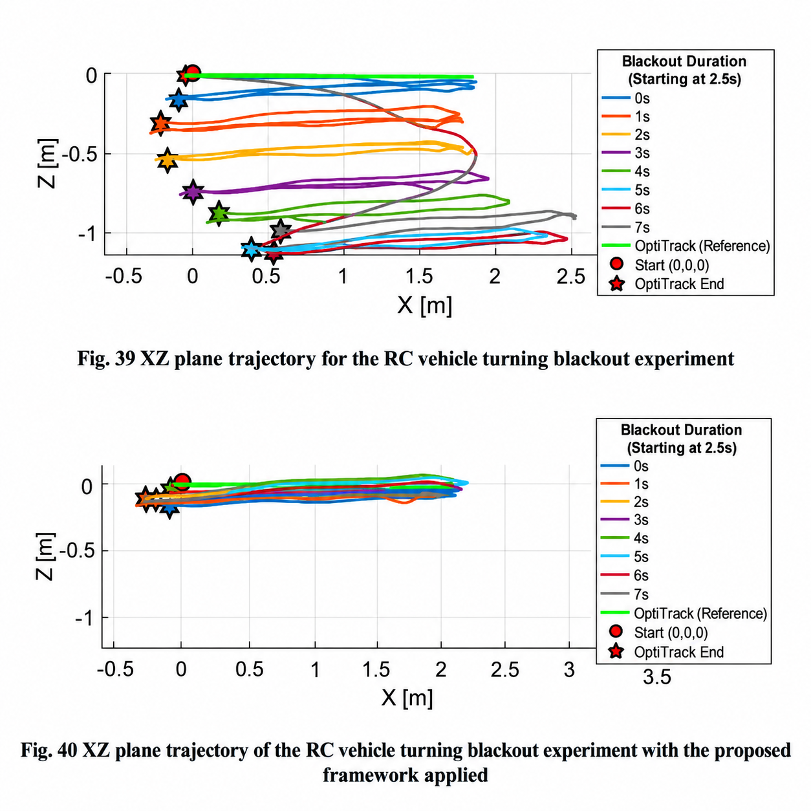
분석 자동화
실험 결과는 MATLAB 파이프라인으로 반복 처리했습니다. VIO와 OptiTrack의 시간을 동기화하고 서로 다른 3차원 좌표계를 선형 변환한 뒤, ATE와 축별 RMSE를 계산했습니다. 조건별 3회 반복 실험의 평균과 논문용 표·그래프까지 같은 절차로 생성하도록 구성했습니다.
연구 결과
VIO 내부 알고리즘 하나를 고치는 데서 끝나지 않고, 실패를 전제로 감지·전환·복구·검증하는 운용 구조를 만들었습니다.
- VINS-Fusion 소스 분석부터 환경 구축, 실험 설계, 데이터 분석과 논문 집필까지 수행
- Gazebo 드론 시뮬레이션과 OptiTrack 기반 RC카 실험으로 실패 대응 구조를 단계적으로 검증
- 제20회 한국로봇종합학술대회 주저자 발표: 「VINS-Fusion 위치추정 성능 향상에 관한 연구」
연구 영상 준비 중대표 연구영상, OptiTrack 실내비행, ORB-SLAM과 VINS 영상을 무음 편집 후 배치합니다.